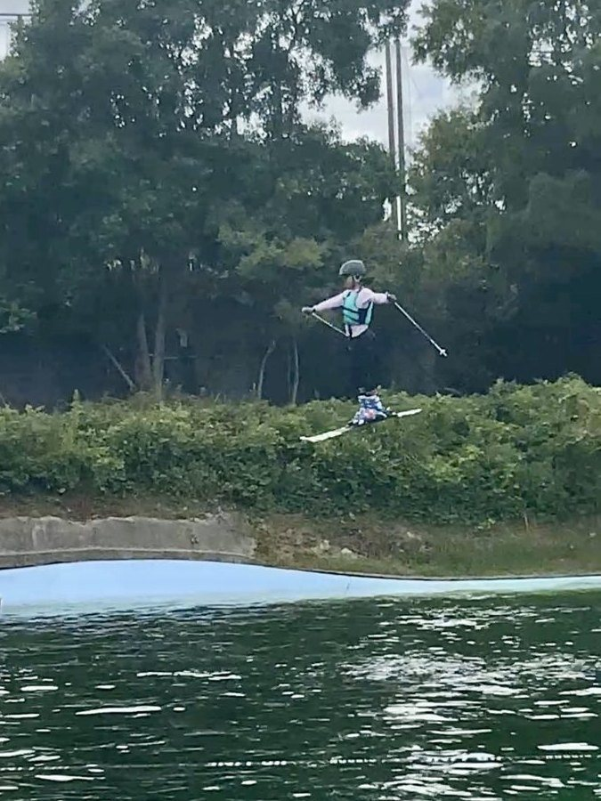
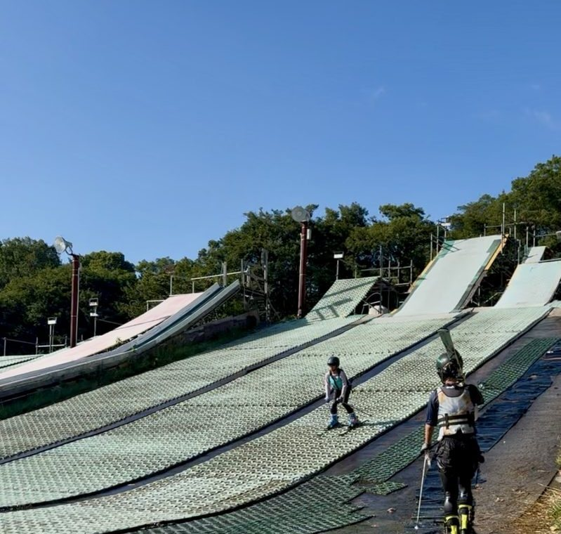
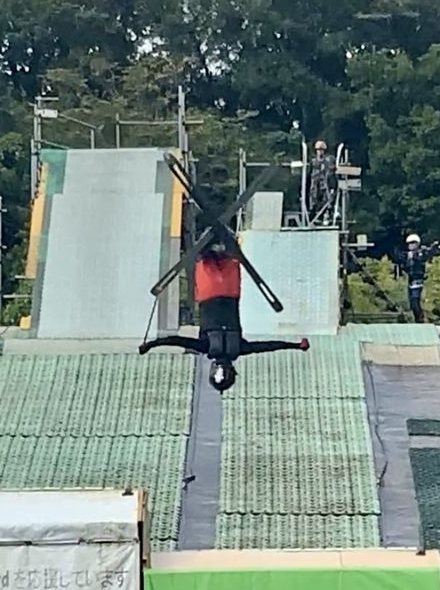

雪が降る前に、エアをつくる。
修正をはさまない反復は、上達ではありません。間違った動きを、上手に固めているだけです。
残りわずか、という話ではありません。コーチが一人ひとりを見る時間を確保するための人数です。
この練習会は、MIC選手が普段やっている練習に入っていただく形です。選手も一緒に練習するため、順番待ちが出ることはあります。その間も、他の選手のエアを間近で見られます。


水の上でも、痛いです。怪我のリスクがゼロになるわけでもありません。
それでも雪の上に比べれば、体勢が崩れたときの代償はずっと小さい。だから、まだ完成していない技に挑戦できます。
友だち追加していただくと、申込フォームがすぐ届きます。
MIC選手育成コースは、雪上練習・大会引率・トレーニング・ウォータージャンプなどを組み合わせた年間プログラムです。